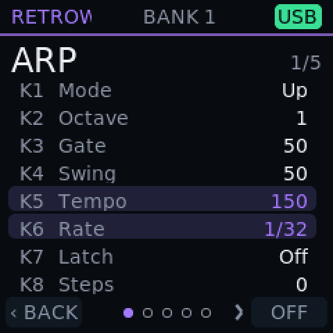
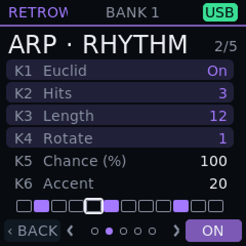
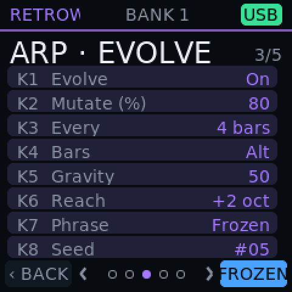
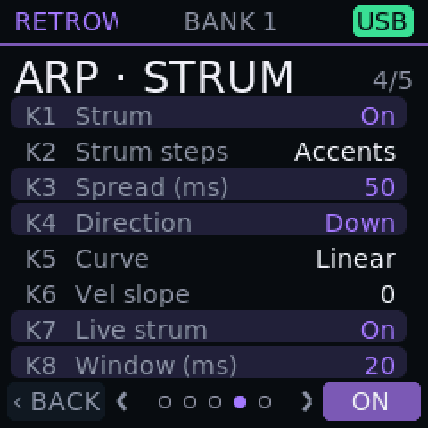

Arpeggiator
From simple up-and-down to patterns that evolve.
Five sections, all optional. With them off, the arp plays exactly as a classic arp does; switch them on one at a time and it starts to breathe.
What it does
- 1
Twenty directions Test build
Up, Down, Inclusive and Exclusive, starting upward or downward, Thumb and Pinky, Converge, Diverge, Chord, Order, User and three kinds of random.
- 2
Rates, gate and swing Test build
Thirteen rates from half notes to triplet thirty-seconds, one to four octaves, tempo from 30 to 300 BPM, gate and swing, and Latch.
- 3
Rhythm Test build
Euclidean patterns: choose hits, length and rotation, add a chance for each hit and an accent on the first.
- 4
Evolve Test build
The phrase drifts and comes back. Set how often it changes, how much, and how far it reaches; freeze it, thaw it or reseed it with one key.
- 5
Strum Test build
Chords play as strums, up, down or alternating, with a spread up to 250 ms, a curve and a velocity slope. Live strum does the same for chords you play by hand.
- 6
Human Test build
Small random lateness, velocity and gate changes, never early, so the order of a strum is kept.
- 7
Your own pattern Test build
Tap the pads to write a pattern of up to sixteen steps, with rests.
- 8
Perform layer Test build
Hold Oct- and tap pads to switch Arp, Rhythm, Strum, Human and Evolve on and off, freeze, reseed or revert, without opening a page.
- 9
Printed shortcuts Test build
Hold ARP and press a printed key for an instant change: direction, octave, latch, gate, swing, tempo, tap or rate.
- 10
Note Repeat Test build
A held pad or key repeats at the chosen rate, sharing the same tempo.
On the screen



